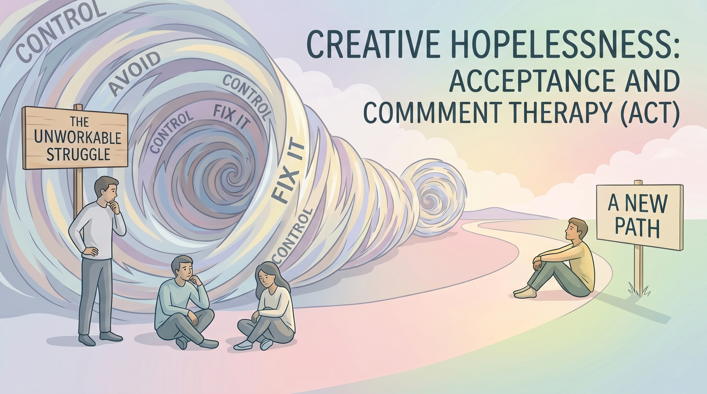

Welcome to Psychological Flexibility Tervetuloa psykologiseen joustavuuteen Bienvenido a la Flexibilidad Psicológica Bienvenue dans la Flexibilité Psychologique Willkommen zur psychologischen Flexibilität Benvenuto nella Flessibilità Psicologica
Have you ever felt like you are fighting a war inside your own mind? Trying to forcefully "think positive," eliminate anxiety, or stop feeling sad? It takes a massive amount of energy, doesn't it? Oletko koskaan tuntenut käyväsi sotaa omassa mielessäsi? Yrittänyt väkisin "ajatella positiivisesti", poistaa ahdistuksen tai lopettaa surun tuntemisen? Se vie valtavasti energiaa, eikö vain? ¿Alguna vez has sentido que estás librando una guerra dentro de tu propia mente? ¿Intentando forzosamente "pensar en positivo", eliminar la ansiedad o dejar de sentirte triste? Consume una cantidad enorme de energía, ¿verdad? Avez-vous déjà eu l'impression de mener une guerre dans votre propre esprit ? D'essayer de forcer la "pensée positive", d'éliminer l'anxiété ou de cesser d'être triste ? Cela demande une quantité massive d'énergie, n'est-ce pas ? Hatten Sie jemals das Gefühl, in Ihrem eigenen Kopf Krieg zu führen? Der krampfhafte Versuch, "positiv zu denken", Ängste zu beseitigen oder aufzuhören, traurig zu sein? Das kostet enorm viel Energie, nicht wahr? Hai mai avuto la sensazione di combattere una guerra dentro la tua stessa mente? Cercando forzatamente di "pensare positivo", eliminare l'ansia o smettere di sentirti triste? Richiede un'enorme quantità di energia, non è vero?
Core Concept: Creative Hopelessness Ydinkäsite: Luova toivottomuus Concepto Central: Desesperanza Creativa Concept Fondamental : Désespoir Créatif Kernkonzept: Kreative Hoffnungslosigkeit Concetto Chiave: Disperazione Creativa
Before we begin, we need to look honestly at what you've already tried. Most of us try to control our internal world (our thoughts and feelings) the same way we control the outside world. If there's a rock in your shoe, you take it out. So, naturally, if there's sadness in your mind, you try to pull it out. Ennen kuin aloitamme, meidän on tarkasteltava rehellisesti sitä, mitä olet jo kokeillut. Useimmat meistä yrittävät hallita sisäistä maailmaansa (ajatuksiaan ja tunteitaan) samalla tavalla kuin ulkoista maailmaa. Jos kengässäsi on kivi, otat sen pois. Joten luonnollisesti, jos mielessäsi on surua, yrität vetää sen pois. Antes de comenzar, debemos mirar con honestidad lo que ya has intentado. La mayoría intentamos controlar nuestro mundo interno (pensamientos y sentimientos) igual que controlamos el mundo externo. Si hay una piedra en tu zapato, te la quitas. Así que, naturalmente, si hay tristeza en tu mente, intentas sacarla. Avant de commencer, nous devons regarder honnêtement ce que vous avez déjà essayé. La plupart d'entre nous essaient de contrôler notre monde interne de la même manière que nous contrôlons le monde extérieur. S'il y a un caillou dans votre chaussure, vous l'enlevez. Donc, naturellement, s'il y a de la tristesse dans votre esprit, vous essayez de la retirer. Bevor wir beginnen, müssen wir uns ehrlich ansehen, was Sie bereits versucht haben. Die meisten von uns versuchen, ihre innere Welt genauso zu kontrollieren wie die äußere Welt. Wenn ein Stein im Schuh ist, nimmt man ihn heraus. Wenn also Traurigkeit im Kopf ist, versucht man natürlich, sie herauszuziehen. Prima di iniziare, dobbiamo guardare onestamente a ciò che hai già provato. La maggior parte di noi cerca di controllare il proprio mondo interno allo stesso modo in cui controlliamo il mondo esterno. Se c'è un sasso nella scarpa, lo togli. Quindi, naturalmente, se c'è tristezza nella tua mente, cerchi di tirarla fuori.
But ask yourself: Has running away from, suppressing, or fighting your difficult emotions permanently worked? If you are completely honest, fighting your mind probably hasn't brought you lasting peace. Realising that your old strategies are "hopeless" isn't depressing—it's liberating. It means you can finally drop the heavy armour you've been carrying and try something radically new. Mutta kysy itseltäsi: onko vaikeiden tunteiden pakeneminen, tukahduttaminen tai niitä vastaan taisteleminen toiminut pysyvästi? Jos olet täysin rehellinen, mielesi kanssa taisteleminen ei todennäköisesti ole tuonut sinulle pysyvää rauhaa. Sen oivaltaminen, että vanhat strategiasi ovat "toivottomia", ei ole masentavaa – se on vapauttavaa. Se tarkoittaa, että voit vihdoin pudottaa kantamasi raskaan haarniskan ja kokeilla jotain täysin uutta. Pero pregúntate: ¿Huir, suprimir o luchar contra tus emociones difíciles ha funcionado permanentemente? Si eres completamente honesto, luchar contra tu mente probablemente no te ha traído paz duradera. Darse cuenta de que tus viejas estrategias son "desesperanzadoras" no es deprimente—es liberador. Significa que por fin puedes soltar la pesada armadura y probar algo radicalmente nuevo. Mais demandez-vous : Fuir, réprimer ou combattre vos émotions difficiles a-t-il fonctionné de manière permanente ? Si vous êtes tout à fait honnête, combattre votre esprit ne vous a probablement pas apporté de paix durable. Réaliser que vos anciennes stratégies sont "sans espoir" n'est pas déprimant—c'est libérateur. Cela signifie que vous pouvez enfin déposer la lourde armure et essayer quelque chose de radicalement nouveau. Aber fragen Sie sich: Hat das Weglaufen vor, das Unterdrücken oder das Bekämpfen Ihrer schwierigen Emotionen dauerhaft funktioniert? Wenn Sie völlig ehrlich sind, hat Ihnen der Kampf gegen Ihren Verstand wahrscheinlich keinen dauerhaften Frieden gebracht. Zu erkennen, dass Ihre alten Strategien "hoffnungslos" sind, ist nicht deprimierend – es ist befreiend. Es bedeutet, dass Sie endlich die schwere Rüstung ablegen und etwas völlig Neues ausprobieren können. Ma chiediti: Scappare, sopprimere o combattere le tue emozioni difficili ha funzionato in modo permanente? Se sei completamente onesto, combattere la tua mente probabilmente non ti ha portato una pace duratura. Rendersi conto che le tue vecchie strategie sono "senza speranza" non è deprimente: è liberatorio. Significa che puoi finalmente far cadere la pesante armatura che hai portato e provare qualcosa di radicalmente nuovo.

Most approaches to mental health are about trying to reduce symptoms. Acceptance and Commitment Therapy (ACT) takes a different approach. Useimmat mielenterveyslähestymistavat pyrkivät vähentämään oireita. Hyväksymis- ja omistautumisterapia (HOT) valitsee toisenlaisen lähestymistavan. La mayoría de los enfoques de salud mental tratan de reducir los síntomas. La Terapia de Aceptación y Compromiso (ACT) toma un enfoque diferente. La plupart des approches en santé mentale visent à réduire les symptômes. La Thérapie d'Acceptation et d'Engagement (ACT) adopte une approche différente. Die meisten Ansätze zur psychischen Gesundheit zielen darauf ab, Symptome zu reduzieren. Die Akzeptanz- und Commitment-Therapie (ACT) verfolgt einen anderen Ansatz. La maggior parte degli approcci alla salute mentale riguarda il tentativo di ridurre i sintomi. La Terapia dell'Accettazione e dell'Impegno (ACT) adotta un approccio diverso.
"The goal of ACT is to create a rich and meaningful life, while accepting the pain that inevitably goes with it." — Dr. Russ Harris "HOT-terapian tavoitteena on luoda rikas ja merkityksellinen elämä, samalla hyväksyen siihen väistämättä kuuluvan kivun." — Tri. Russ Harris "El objetivo de ACT es crear una vida rica y significativa, mientras aceptamos el dolor que inevitablemente la acompaña." — Dr. Russ Harris "Le but de l'ACT est de créer une vie riche et significative, tout en acceptant la douleur qui l'accompagne inévitablement." — Dr. Russ Harris "Das Ziel von ACT ist es, ein reiches und sinnvolles Leben zu schaffen und gleichzeitig den Schmerz zu akzeptieren, der unweigerlich damit einhergeht." — Dr. Russ Harris "L'obiettivo dell'ACT è creare una vita ricca e significativa, accettando al contempo il dolore che inevitabilmente la accompagna." — Dr. Russ Harris
Core Concept: Workability Ydinkäsite: Toimivuus Concepto Central: Funcionalidad (Workability) Concept Fondamental : Fonctionnalité Kernkonzept: Praktikabilität Concetto Chiave: Funzionalità
In this program, we are not going to ask if a thought is "true" or "false." We are going to ask if it is Workable. Does listening to this thought help you build the life you want, or does it keep you stuck? Workability is our ultimate measuring stick. Tässä ohjelmassa emme kysy, onko ajatus "tosi" vai "epätosi". Kysymme, onko se Toimiva. Auttaako tämän ajatuksen kuunteleminen sinua rakentamaan haluamaasi elämää, vai pitääkö se sinut jumissa? Toimivuus on perimmäinen mittarimme. En este programa, no vamos a preguntar si un pensamiento es "verdadero" o "falso". Vamos a preguntar si es Funcional. ¿Escuchar este pensamiento te ayuda a construir la vida que deseas, o te mantiene estancado? La funcionalidad es nuestra medida definitiva. Dans ce programme, nous n'allons pas demander si une pensée est "vraie" ou "fausse". Nous allons demander si elle est Fonctionnelle. Le fait d'écouter cette pensée vous aide-t-il à construire la vie que vous voulez, ou vous maintient-il bloqué ? La fonctionnalité est notre outil de mesure ultime. In diesem Programm werden wir nicht fragen, ob ein Gedanke "wahr" oder "falsch" ist. Wir werden fragen, ob er Praktikabel ist. Hilft Ihnen das Zuhören bei diesem Gedanken, das Leben aufzubauen, das Sie wollen, oder hält er Sie fest? Praktikabilität ist unser ultimativer Maßstab. In questo programma, non chiederemo se un pensiero è "vero" o "falso". Chiederemo se è Funzionale. Ascoltare questo pensiero ti aiuta a costruire la vita che desideri o ti tiene bloccato? La funzionalità è il nostro metro di misura definitivo.
Over the next five weeks, we will train your mind to step back from unhelpful thoughts, ground yourself in the present, and most importantly, take action toward what you actually care about. Seuraavien viiden viikon aikana valmennamme mieltäsi ottamaan etäisyyttä hyödyttömiin ajatuksiin, maadoittumaan nykyhetkeen ja, mikä tärkeintä, toimimaan kohti sitä, mistä todella välität. Durante las próximas cinco semanas, entrenaremos tu mente para alejarse de los pensamientos inútiles, centrarse en el presente y, lo más importante, tomar medidas hacia lo que realmente te importa. Au cours des cinq prochaines semaines, nous allons entraîner votre esprit à prendre du recul par rapport aux pensées inutiles, à vous ancrer dans le présent et, surtout, à agir vers ce qui compte vraiment pour vous. In den nächsten fünf Wochen werden wir Ihren Geist darauf trainieren, von wenig hilfreichen Gedanken zurückzutreten, sich in der Gegenwart zu verankern und vor allem auf das hinzuarbeiten, was Ihnen wirklich wichtig ist. Nelle prossime cinque settimane, alleneremo la tua mente a fare un passo indietro dai pensieri inutili, a radicarti nel presente e, soprattutto, ad agire verso ciò a cui tieni veramente.
How to use this platform Kuinka käyttää tätä alustaa Cómo usar esta plataforma Comment utiliser cette plateforme So nutzen Sie diese Plattform Come usare questa piattaforma
- Dedicate Time: Each module contains reading, active reflection, and interactive exercises. Expect to spend 30–60 minutes per week. This is not a skim-read experience. Varaa aikaa: Jokainen moduuli sisältää lukemista, aktiivista reflektointia ja interaktiivisia harjoituksia. Odota käyttäväsi 30–60 minuuttia viikossa. Tämä ei ole vain pintapuolinen lukukokemus. Dedica Tiempo: Cada módulo contiene lectura, reflexión activa y ejercicios interactivos. Espera dedicar entre 30 y 60 minutos por semana. Esta no es una experiencia de lectura rápida. Consacrer du temps: Chaque module contient de la lecture, une réflexion active et des exercices interactifs. Prévoyez de passer 30 à 60 minutes par semaine. Ce n'est pas une expérience de lecture rapide. Nehmen Sie sich Zeit: Jedes Modul enthält Lesen, aktive Reflexion und interaktive Übungen. Rechnen Sie mit 30–60 Minuten pro Woche. Dies ist keine Erfahrung zum Überfliegen. Dedica del Tempo: Ogni modulo contiene lettura, riflessione attiva ed esercizi interattivi. Aspettati di dedicare 30-60 minuti a settimana. Questa non è un'esperienza di lettura veloce.
- Audio Guides: Find a quiet place to listen to the embedded audio exercises. Äänioppaat: Etsi hiljainen paikka kuunnellaksesi upotettuja ääniharjoituksia. Guías de Audio: Encuentra un lugar tranquilo para escuchar los ejercicios de audio integrados. Guides Audio: Trouvez un endroit calme pour écouter les exercices audio intégrés. Audio-Guides: Suchen Sie sich einen ruhigen Ort, um die eingebetteten Audioübungen anzuhören. Guide Audio: Trova un posto tranquillo per ascoltare gli esercizi audio incorporati.
- Auto-Save: As you type in the text boxes or select options, your progress is automatically saved to your browser. You can leave and come back anytime. Automaattinen tallennus: Kun kirjoitat tekstikenttiin tai valitset vaihtoehtoja, edistymisesi tallentuu automaattisesti selaimeesi. Voit poistua ja palata milloin tahansa. Autoguardado: Mientras escribes en los cuadros de texto o seleccionas opciones, tu progreso se guarda automáticamente. Puedes salir y volver en cualquier momento. Sauvegarde Auto: Au fur et à mesure que vous tapez, vos progrès sont automatiquement enregistrés dans votre navigateur. Vous pouvez partir et revenir à tout moment. Automatisches Speichern: Während Sie tippen, wird Ihr Fortschritt automatisch in Ihrem Browser gespeichert. Sie können jederzeit gehen und zurückkommen. Salvataggio Automatico: Mentre digiti, i tuoi progressi vengono salvati automaticamente nel browser. Puoi uscire e tornare in qualsiasi momento.
- Sequential Pacing: To ensure you practise these skills in the real world, modules must be completed sequentially. Eteneminen järjestyksessä: Varmistaaksemme, että harjoittelet näitä taitoja oikeassa elämässä, moduulit on suoritettava järjestyksessä. Ritmo Secuencial: Para asegurar que practiques en el mundo real, los módulos deben completarse secuencialmente. Rythme Séquentiel: Pour vous assurer de pratiquer dans le monde réel, les modules doivent être complétés de manière séquentielle. Sequentielles Tempo: Um sicherzustellen, dass Sie in der realen Welt üben, müssen die Module nacheinander absolviert werden. Ritmo Sequenziale: Per assicurarti di fare pratica nel mondo reale, i moduli devono essere completati in sequenza.
Week 1: Discovering Your Compass Viikko 1: Kompassisi löytäminen Semana 1: Descubriendo tu Brújula Semaine 1 : Découvrir votre Boussole Woche 1: Deinen Kompass entdecken Settimana 1: Scoprire la tua Bussola
Before we can navigate the storms of the mind, we need to know where we are sailing. In ACT, we differentiate heavily between Goals, Rules, and Values. Ennen kuin voimme navigoida mielen myrskyissä, meidän on tiedettävä, mihin olemme purjehtimassa. HOT-terapiassa erotamme vahvasti toisistaan Tavoitteet, Säännöt ja Arvot. Antes de poder navegar por las tormentas de la mente, necesitamos saber hacia dónde navegamos. En ACT, diferenciamos mucho entre Metas, Reglas y Valores. Avant de pouvoir naviguer dans les tempêtes de l'esprit, nous devons savoir où nous naviguons. Dans l'ACT, nous différencions fortement les Objectifs, les Règles et les Valeurs. Bevor wir durch die Stürme des Geistes navigieren können, müssen wir wissen, wohin wir segeln. In der ACT unterscheiden wir stark zwischen Zielen, Regeln und Werten. Prima di poter navigare le tempeste della mente, dobbiamo sapere verso dove stiamo navigando. Nell'ACT differenziamo pesantemente tra Obiettivi, Regole e Valori.
A Goal is a destination. "Getting married," "Losing 10 pounds," or "Getting a promotion." Once you achieve it, it's checked off. The problem with living purely for goals is that if you fail, you feel worthless, and if you succeed, you eventually ask, "Is that all there is?" Tavoite on määränpää. "Naimisiinmeno", "5 kilon laihduttaminen" tai "Ylennyksen saaminen". Kun saavutat sen, se on rastitettu. Pelkästään tavoitteiden varassa elämisen ongelma on se, että jos epäonnistut, tunnet itsesi arvottomaksi, ja jos onnistut, kysyt lopulta: "Tässäkö tämä kaikki oli?" Una Meta es un destino. "Casarse", "Perder 5 kilos" o "Conseguir un ascenso". Una vez que lo logras, se marca como completado. El problema de vivir solo por metas es que si fallas, te sientes inútil, y si tienes éxito, eventualmente preguntas: "¿Eso es todo?" Un Objectif est une destination. "Se marier", "Perdre 5 kilos", ou "Obtenir une promotion". Une fois atteint, il est coché. Le problème de ne vivre que pour des objectifs est que si vous échouez, vous vous sentez inutile, et si vous réussissez, vous finissez par demander : "Est-ce tout ce qu'il y a ?" Ein Ziel ist ein Zielort. "Heiraten", "5 Kilo abnehmen" oder "Befördert werden". Sobald man es erreicht hat, ist es abgehakt. Das Problem beim Leben nur für Ziele ist, dass man sich wertlos fühlt, wenn man versagt, und wenn man Erfolg hat, fragt man sich irgendwann: "War das schon alles?" Un Obiettivo è una destinazione. "Sposarsi", "Perdere 5 chili" o "Ottenere una promozione". Una volta raggiunto, è spuntato. Il problema di vivere solo per gli obiettivi è che se fallisci ti senti inutile, e se hai successo, alla fine ti chiedi: "Tutto qui?"
A Rule is a rigid standard. "I must never show weakness," or "I have to be productive every day to be worthy." Rules are rigid and brittle; when they break, we crash. Sääntö on joustamaton standardi. "Minun ei koskaan pidä näyttää heikkoutta" tai "Minun on oltava tuottava joka päivä ollakseni arvokas". Säännöt ovat jäykkiä ja hauraita; kun ne rikkoutuvat, me romahdamme. Una Regla es un estándar rígido. "Nunca debo mostrar debilidad" o "Tengo que ser productivo todos los días para ser valioso". Las reglas son rígidas y frágiles; cuando se rompen, nos derrumbamos. Une Règle est une norme rigide. "Je ne dois jamais montrer de faiblesse" ou "Je dois être productif chaque jour pour avoir de la valeur". Les règles sont rigides et fragiles ; lorsqu'elles se brisent, nous nous effondrons. Eine Regel ist ein starrer Standard. "Ich darf niemals Schwäche zeigen" oder "Ich muss jeden Tag produktiv sein, um wertvoll zu sein." Regeln sind starr und spröde; wenn sie brechen, stürzen wir ab. Una Regola è uno standard rigido. "Non devo mai mostrare debolezza" o "Devo essere produttivo ogni giorno per avere valore." Le regole sono rigide e fragili; quando si rompono, crolliamo.
A Value is a direction on a compass. For example, "Being loving," "Caring for my body," or "Being industrious." You can never "finish" being loving. Even if you don't get the promotion, you can act industriously. Values are always available to you, right in this exact moment, regardless of your external circumstances. Arvo on suunta kompassissa. Esimerkiksi "Rakastava oleminen", "Kehosta huolehtiminen" tai "Ahkeruus". Et voi koskaan olla "valmis" olemaan rakastava. Vaikka et saisikaan ylennystä, voit toimia ahkerasti. Arvot ovat aina saatavillasi, juuri tässä hetkessä, ulkoisista olosuhteistasi riippumatta. Un Valor es una dirección en una brújula. Por ejemplo, "Ser cariñoso", "Cuidar mi cuerpo" o "Ser laborioso". Nunca "terminas" de ser cariñoso. Incluso si no consigues el ascenso, puedes actuar con laboriosidad. Los valores siempre están disponibles para ti, justo en este momento exacto, sin importar tus circunstancias externas. Une Valeur est une direction sur une boussole. Par exemple, "Être aimant", "Prendre soin de mon corps", ou "Être assidu". Vous ne pouvez jamais "finir" d'être aimant. Même si vous n'obtenez pas la promotion, vous pouvez agir avec assiduité. Les valeurs sont toujours à votre disposition, à cet instant précis, quelles que soient les circonstances extérieures. Ein Wert ist eine Richtung auf einem Kompass. Zum Beispiel "Liebevoll sein", "Für meinen Körper sorgen" oder "Fleißig sein". Man kann nie "aufhören", liebevoll zu sein. Selbst wenn man nicht befördert wird, kann man fleißig handeln. Werte stehen einem immer zur Verfügung, genau in diesem Moment, unabhängig von äußeren Umständen. Un Valore è una direzione su una bussola. Ad esempio, "Essere amorevole", "Prendermi cura del mio corpo" o "Essere laborioso". Non puoi mai "finire" di essere amorevole. Anche se non ottieni la promozione, puoi agire con laboriosità. I valori sono sempre a tua disposizione, proprio in questo preciso momento, indipendentemente dalle circostanze esterne.
![[Image Placeholder: A visual diagram comparing a Compass (Values) to a Checkered Flag (Goals)]](assets/values-compass-diagram.jpg)
Exercise 1: Values Card Sort Harjoitus 1: Arvokorttien lajittelu Ejercicio 1: Clasificación de Tarjetas de Valores Exercice 1 : Tri de Cartes de Valeurs Übung 1: Wertekarten sortieren Esercizio 1: Ordinamento delle Carte dei Valori
Below are common values. Read through them and click to select the five that resonate most deeply with how you want to behave as a human being on this planet. Don't pick what you think you should value, pick what actually makes you feel alive. Alla on yleisiä arvoja. Lue ne läpi ja valitse klikkaamalla viisi, jotka resonoivat syvimmin sen kanssa, miten haluat toimia ihmisenä tällä planeetalla. Älä valitse sitä, mitä luulet, että sinun pitäisi arvostaa, vaan valitse se, mikä saa sinut tuntemaan itsesi eläväksi. A continuación hay valores comunes. Léelos y haz clic para seleccionar los cinco que resuenen más profundamente con cómo quieres comportarte. No elijas lo que crees que deberías valorar, elige lo que realmente te hace sentir vivo. Ci-dessous des valeurs communes. Lisez-les et cliquez pour sélectionner les cinq qui résonnent le plus avec la façon dont vous souhaitez vous comporter. Ne choisissez pas ce que vous pensez devoir valoriser, choisissez ce qui vous fait vraiment vous sentir vivant. Nachfolgend finden Sie allgemeine Werte. Lesen Sie sie durch und wählen Sie die fünf aus, die am meisten mit der Art und Weise übereinstimmen, wie Sie sich verhalten möchten. Wählen Sie nicht das, von dem Sie denken, dass Sie es wertschätzen sollten, sondern das, was Sie wirklich lebendig fühlen lässt. Di seguito ci sono valori comuni. Leggili e clicca per selezionare i cinque che risuonano più profondamente con il modo in cui vuoi comportarti. Non scegliere ciò che pensi dovresti valorizzare, scegli ciò che ti fa davvero sentire vivo.
Selected: Valittu: Seleccionado: Sélectionné: Ausgewählt: Selezionato: 0 / 5
Exercise 2: The Role Model Reflection Harjoitus 2: Roolimallin reflektointi Ejercicio 2: Reflexión sobre el Modelo a Seguir Exercice 2 : Réflexion sur le Modèle de Rôle Übung 2: Vorbild-Reflexion Esercizio 2: Riflessione sul Modello di Ruolo
Sometimes our own values are obscured by our self-doubt, but they are incredibly obvious when we look at people we admire. Think of someone you deeply respect (a friend, a historical figure, a fictional character). Break down the specific qualities they embody below. Joskus omat arvomme peittyvät epäilyksen alle, mutta ne ovat uskomattoman ilmeisiä, kun katsomme ihailemiamme ihmisiä. Ajattele jotakuta, jota kunnioitat syvästi (ystävä, historiallinen henkilö, kuvitteellinen hahmo). Erittele alla tietyt ominaisuudet, joita he ilmentävät. A veces nuestros propios valores se oscurecen por nuestra duda, pero son increíblemente obvios cuando miramos a las personas que admiramos. Piensa en alguien a quien respetes profundamente. Desglosa las cualidades específicas que encarnan a continuación. Parfois, nos propres valeurs sont obscurcies par nos doutes, mais elles sont incroyablement évidentes lorsque nous regardons les personnes que nous admirons. Pensez à quelqu'un que vous respectez profondément. Détaillez ci-dessous les qualités spécifiques qu'il incarne. Manchmal werden unsere eigenen Werte durch Selbstzweifel verdeckt, aber sie sind unglaublich offensichtlich, wenn wir Menschen betrachten, die wir bewundern. Denken Sie an jemanden, den Sie zutiefst respektieren. Schlüsseln Sie unten die spezifischen Eigenschaften auf, die sie verkörpern. A volte i nostri valori sono oscurati dai nostri dubbi, ma sono incredibilmente ovvi quando guardiamo le persone che ammiriamo. Pensa a qualcuno che rispetti profondamente. Scomponi le qualità specifiche che incarnano qui sotto.
Note: The qualities you just wrote down are not just facts about them—they are reflections of your own core values. Huomaa: Ominaisuudet, jotka juuri kirjoitit ylös, eivät ole vain faktoja heistä – ne heijastavat sinun omia ydinarvojasi. Nota: Las cualidades que acabas de escribir no son solo hechos sobre ellos—son reflejos de tus propios valores fundamentales. Remarque : Les qualités que vous venez d'écrire ne sont pas de simples faits sur eux—elles sont le reflet de vos propres valeurs fondamentales. Hinweis: Die Eigenschaften, die Sie gerade aufgeschrieben haben, sind nicht nur Fakten über sie – sie spiegeln Ihre eigenen Grundwerte wider. Nota: Le qualità che hai appena scritto non sono solo fatti su di loro—sono riflessi dei tuoi stessi valori fondamentali.
Exercise 3: The 80th Birthday Visualisation Harjoitus 3: 80-vuotissyntymäpäivän visualisointi Ejercicio 3: Visualización del 80º Cumpleaños Exercice 3 : Visualisation du 80e Anniversaire Übung 3: Visualisierung des 80. Geburtstags Esercizio 3: Visualizzazione dell'80° Compleanno
To deepen this, let's step outside of today's anxieties. Play the audio below, close your eyes, and follow the prompt. Syventääksemme tätä, astutaanpa ulos tämän päivän ahdistuksista. Soita alla oleva äänite, sulje silmäsi ja seuraa ohjeita. Para profundizar, salgamos de las ansiedades de hoy. Reproduce el audio, cierra los ojos y sigue las instrucciones. Pour approfondir, sortons des angoisses d'aujourd'hui. Lisez l'audio ci-dessous, fermez les yeux et suivez les instructions. Um dies zu vertiefen, lassen Sie uns die heutigen Ängste verlassen. Spielen Sie das Audio ab, schließen Sie die Augen und folgen Sie der Anleitung. Per approfondire, usciamo dalle ansie di oggi. Riproduci l'audio qui sotto, chiudi gli occhi e segui le istruzioni.
🎧 Guided Audio: The 80th Birthday (5:55) 🎧 Ohjattu äänite: 80-vuotissyntymäpäivä (5:55) 🎧 Audio Guiado: El 80º Cumpleaños (5:55) 🎧 Audio Guidé : Le 80e Anniversaire (5:55) 🎧 Geführtes Audio: Der 80. Geburtstag (5:55) 🎧 Audio Guidato: L'80° Compleanno (5:55)
In this visualisation, you imagined what people you care about would say about you at the end of a life well-lived. They didn't talk about your bank account; they talked about your character. Tässä visualisoinnissa kuvittelit, mitä sinusta välittävät ihmiset sanoisivat sinusta hyvin eletyn elämän lopussa. He eivät puhuneet pankkitilistäsi; he puhuivat luonteestasi. En esta visualización, imaginaste lo que las personas que te importan dirían de ti al final de una vida bien vivida. No hablaron de tu cuenta bancaria; hablaron de tu carácter. Dans cette visualisation, vous avez imaginé ce que les personnes qui comptent pour vous diraient de vous à la fin d'une vie bien vécue. Ils n'ont pas parlé de votre compte en banque ; ils ont parlé de votre caractère. In dieser Visualisierung haben Sie sich vorgestellt, was Menschen, die Ihnen wichtig sind, am Ende eines gut gelebten Lebens über Sie sagen würden. Sie haben nicht über Ihr Bankkonto gesprochen; sie haben über Ihren Charakter gesprochen. In questa visualizzazione, hai immaginato cosa le persone a cui tieni direbbero di te alla fine di una vita ben vissuta. Non hanno parlato del tuo conto in banca; hanno parlato del tuo carattere.
Exercise 4: The Valued Living Domains Harjoitus 4: Arvokkaan elämän osa-alueet Ejercicio 4: Los Dominios de Vida Valorados Exercice 4 : Les Domaines de Vie Valorisés Übung 4: Die bewerteten Lebensbereiche Esercizio 4: I Domini di Vita Valorizzati
Now, let's look at four major domains of life. For each domain, select the value that matters most to you right now, and briefly describe what living that value would actually look like. Tarkastellaan nyt elämän pääalueita. Valitse jokaiselle alueelle sinulle tällä hetkellä tärkein arvo ja kuvaile lyhyesti, miltä tuon arvon eläminen käytännössä näyttäisi. Ahora, miremos cuatro dominios importantes de la vida. Para cada uno, selecciona el valor que más te importa en este momento y describe brevemente cómo se vería vivir ese valor. Examinons maintenant quatre grands domaines de la vie. Pour chacun, sélectionnez la valeur qui vous importe le plus actuellement et décrivez brièvement à quoi ressemblerait le fait de vivre cette valeur. Schauen wir uns nun vier Hauptlebensbereiche an. Wählen Sie für jeden Bereich den Wert, der Ihnen im Moment am wichtigsten ist, und beschreiben Sie kurz, wie es aussehen würde, diesen Wert tatsächlich zu leben. Ora diamo un'occhiata a quattro principali domini della vita. Per ogni dominio, seleziona il valore che ti sta più a cuore in questo momento e descrivi brevemente come sarebbe vivere effettivamente quel valore.
💼 Work / Education (Paid, unpaid, volunteering) 💼 Työ / Koulutus (Palkattu, palkaton, vapaaehtoistyö) 💼 Trabajo / Educación (Remunerado, voluntariado) 💼 Travail / Éducation (Rémunéré, bénévolat) 💼 Arbeit / Bildung (Bezahlt, Ehrenamt) 💼 Lavoro / Istruzione (Retribuito, volontariato)
❤️ Relationships (Family, friends, intimacy) ❤️ Ihmissuhteet (Perhe, ystävät, läheisyys) ❤️ Relaciones (Familia, amigos, intimidad) ❤️ Relations (Famille, amis, intimité) ❤️ Beziehungen (Familie, Freunde, Intimität) ❤️ Relazioni (Famiglia, amici, intimità)
🌱 Personal Growth & Health (Physical wellbeing, spirituality) 🌱 Henkilökohtainen kasvu & Terveys (Fyysinen hyvinvointi, henkisyys) 🌱 Crecimiento Personal y Salud (Bienestar físico, espiritualidad) 🌱 Croissance Personnelle et Santé (Bien-être physique, spiritualité) 🌱 Persönliches Wachstum & Gesundheit (Körperliches Wohlbefinden) 🌱 Crescita Personale e Salute (Benessere fisico, spiritualità)
Look at what you've written. The areas where you feel the most psychological pain are usually the areas where you are most disconnected from these values. Pain is just a signal that something important to you is being neglected. Katso, mitä olet kirjoittanut. Alueet, joilla tunnet eniten psykologista kipua, ovat yleensä niitä, joilla olet eniten irtaantunut näistä arvoista. Kipu on vain signaali siitä, että jotain sinulle tärkeää laiminlyödään. Mira lo que has escrito. Las áreas donde sientes más dolor psicológico suelen ser las áreas donde estás más desconectado de estos valores. El dolor es solo una señal de que se está descuidando algo importante para ti. Regardez ce que vous avez écrit. Les domaines où vous ressentez le plus de douleur psychologique sont généralement ceux où vous êtes le plus déconnecté de ces valeurs. La douleur n'est qu'un signal qu'une chose importante pour vous est négligée. Sehen Sie sich an, was Sie geschrieben haben. Die Bereiche, in denen Sie den größten psychischen Schmerz verspüren, sind normalerweise die Bereiche, in denen Sie am meisten von diesen Werten getrennt sind. Schmerz ist nur ein Signal, dass etwas, das Ihnen wichtig ist, vernachlässigt wird. Guarda cosa hai scritto. Le aree in cui provi più dolore psicologico sono di solito le aree in cui sei più disconnesso da questi valori. Il dolore è solo un segnale che qualcosa di importante per te viene trascurato.
Week 2: Taking Committed Action Viikko 2: Sitoutunut toiminta
Welcome back. Last week, we calibrated your compass. This week, we start walking. In ACT, Committed Action means taking effective steps guided by your values, even when it brings up psychological discomfort. Tervetuloa takaisin. Viime viikolla kalibroimme kompassisi. Tällä viikolla aloitamme kävelemisen. HOT-terapiassa Sitoutunut toiminta tarkoittaa arvojesi ohjaamien tehokkaiden askelten ottamista, jopa silloin, kun se herättää psykologista epämukavuutta.
Core Concept: The Choice Point Ydinkäsite: Valintapiste
Imagine your life as a constant series of Choice Points—forks in the road. In every moment, you can either make an "Away" move or a "Towards" move. Kuvittele elämäsi jatkuvana valintapisteiden (tienhaarojen) sarjana. Joka hetki voit tehdä joko 'Poispäin'-liikkeen tai 'Kohti'-liikkeen.
Trigger: Feeling Anxious / Overwhelmed
Laukaisin: Ahdistuksen / Ylikuormituksen tunne
Away Moves Poispäin-liikkeet
←
Actions you take to avoid difficult feelings.
(e.g., Cancelling plans, doomscrolling, snapping at partner).
Toimet, joita teet välttääksesi vaikeita tunteita.
(esim. suunnitelmien peruminen, doomscrolling, tiuskiminen kumppanille).
Short term: Relief. Long term: Stuck. Lyhyt aikaväli: Helpotus. Pitkä aikaväli: Jumissa.
Towards Moves Kohti-liikkeet
→
Actions guided by values, carrying the difficult feelings with you.
(e.g., Going to the event anyway, speaking up).
Arvojen ohjaamat toimet, kantaen vaikeita tunteita mukanasi.
(esim. tapahtumaan meneminen joka tapauksessa, suunsa avaaminen).
Short term: Discomfort. Long term: Meaning. Lyhyt aikaväli: Epämukavuus. Pitkä aikaväli: Merkitys.
The Passengers on the Bus Metaphor Matkustajat bussissa -metafora
Imagine you are driving a bus toward your Values. Along the way, you pick up unruly passengers: anxiety, self-doubt, memories of past failures, and harsh self-judgment. Kuvittele ajavasi bussia kohti arvojasi. Matkan varrella otat kyytiin kurittomia matkustajia: ahdistusta, epäilystä, muistoja menneistä epäonnistumisista ja ankaraa itsensä tuomitsemista.
When you make a "Towards" move, these passengers rush to the front and yell, "You're going to crash! You're a fraud! Turn around!" To quiet them, you might veer off course (an "Away" move) just to keep them happy in the back of the bus. Kun teet "Kohti"-liikkeen, nämä matkustajat ryntäävät etuosaan ja huutavat: "Törmäät! Olet huijari! Käänny ympäri!" Hiljentääksesi heidät saatat poiketa kurssilta ("Poispäin"-liike) vain pitääksesi heidät tyytyväisinä bussin takaosassa.
Committed action is realising you cannot throw them off the bus, but you are the driver. They can yell, but they cannot turn the steering wheel. Sitoutunut toiminta on sen oivaltamista, ettet voi heittää heitä ulos bussista, mutta sinä olet kuljettaja. He voivat huutaa, mutta he eivät voi kääntää rattia.
![[Image Placeholder: Passengers on the bus]](assets/passengers on the bus.jpg)
Exercise 1: Identifying Your Passengers Harjoitus 1: Matkustajiesi tunnistaminen
When you think about making a Towards move this week, what specific passengers start yelling at you? Select all that apply: Kun mietit Kohti-liikkeen tekemistä tällä viikolla, mitkä tietyt matkustajat alkavat huutaa sinulle? Valitse kaikki sopivat:
Exercise 2: Gradual Stepping Stones Harjoitus 2: Asteittaiset askelmerkit
Look at the core values you selected in Week 1: Katso viikolla 1 valitsemiasi ydinarvoja: [Complete Week 1 First]
Pick one of these values. Often we fail because we try to take a massive leap instead of a step. Let's break it down using the concept of Workability. Valitse yksi näistä arvoista. Usein epäonnistumme, koska yritämme ottaa massiivisen loikan askeleen sijaan. Jaetaan se osiin Toimivuuden käsitteen avulla.
Exercise 3: Obstacles & Workability Matrix Harjoitus 3: Esteet & Toimivuusmatriisi
Before committing to your tiny step, let's predict what will get in the way so you aren't surprised when it happens. Ennen kuin sitoudut pieneen askeleeseesi, ennustetaan mikä tulee tielle, jottet ylläty, kun niin tapahtuu.
Exercise 4: The Willingness Contract & Goal Builder Harjoitus 4: Halukkuussopimus & Tavoitteen rakentaja
We are going to build a micro-goal for this week. It needs to be incredibly specific. We want a "Living Goal" (something you actively do), not a "Dead Man's Goal" (something a dead person could do better, like "I won't feel anxious"). Rakennamme mikrotavoitteen tälle viikolle. Sen on oltava äärimmäisen spesifi. Haluamme "Elävän tavoitteen" (jotain mitä aktiivisesti teet), emme "Kuolleen miehen tavoitetta" (jotain minkä kuollut ihminen voisi tehdä paremmin, kuten "En tunne ahdistusta").
Build Your Action Plan Rakenna toimintasuunnitelmasi
Fill out the fields above and click compile to generate your contract.
Your homework this week is to execute this exact action. Remember, the goal is not to feel good while doing it. The goal is to do it even if you feel uncomfortable. Kotitehtäväsi tällä viikolla on suorittaa juuri tämä teko. Muista, että tavoitteena ei ole tuntea oloa hyväksi sitä tehdessä. Tavoitteena on tehdä se vaikka tuntisit olosi epämukavaksi.
Week 3: Waking Up to the Here and Now Viikko 3: Herääminen tähän hetkeen
You've identified your values and committed to action. But have you noticed that much of the time, you aren't actually "here" to experience your life? Olet tunnistanut arvosi ja sitoutunut toimintaan. Mutta oletko huomannut, että suurimman osan ajasta et itse asiassa ole "täällä" kokemassa elämääsi?
Our minds are incredible time-travelling machines. But they rarely travel to pleasant places. Most of our psychological suffering occurs when we get trapped in: Mielemme ovat uskomattomia aikakoneita. Mutta ne matkustavat harvoin miellyttäviin paikkoihin. Suurin osa psykologisesta kärsimyksestämme tapahtuu, kun jäämme loukkuun:
- The Conceptualised Future: Worrying about what might happen, anticipating disaster, rehearsing arguments that haven't occurred. (This is where Anxiety lives). Käsitteellistettyyn tulevaisuuteen: Murehdimme sitä, mitä saattaisi tapahtua, ennakoimme katastrofia, harjoittelemme väittelyitä, joita ei ole tapahtunut. (Täällä Ahdistus asuu).
- The Conceptualised Past: Ruminating on what did happen, regretting past choices, playing memories on loop. (This is where Depression often lives). Käsitteellistettyyn menneisyyteen: Märehdimme sitä, mitä tapahtui, kadumme menneitä valintoja, toistamme muistoja silmukassa. (Täällä Masennus usein asuu).
The only place you have any power to take action is right here, right now. In ACT, we don't practise mindfulness to achieve a state of "zen" or relaxation. We practise it simply to wake up at the steering wheel so we can steer the bus. Ainoa paikka, jossa sinulla on valtaa toimia, on juuri tässä ja nyt. HOT-terapiassa emme harjoita mindfulnessia saavuttaaksemme "zen"-tilan tai rentoutumisen. Harjoitamme sitä yksinkertaisesti herätäksemme rattiin, jotta voimme ohjata bussia.
![[Image Placeholder: A visual example of conceptualised time]](assets/conceptualised-time.jpg)
Exercise 1: Dropping Anchor (5-4-3-2-1) Harjoitus 1: Ankkurin pudottaminen (5-4-3-2-1)
When an emotional storm hits, you don't try to stop the storm (that's impossible). You drop an anchor to keep your boat steady until the storm passes. We use our five physical senses as the anchor. Kun tunnemysky iskee, et yritä pysäyttää myrskyä (se on mahdotonta). Pudotat ankkurin pitääksesi veneesi vakaana, kunnes myrsky menee ohi. Käytämme viittä fyysistä aistiamme ankkurina.
Do this exercise right now, physically in the room you are in. Look around. Check the boxes as you complete each step. Tee tämä harjoitus juuri nyt, fyysisesti siinä huoneessa, jossa olet. Katso ympärillesi. Rastita ruudut sitä mukaa, kun suoritat jokaisen vaiheen.
Exercise 2: The Quick 3-Zone Body Scan Harjoitus 2: Nopea 3 alueen kehoskannaus
We often carry our psychological stress in our physical body without noticing. Click through the zones below to do a rapid, active grounding scan. Käsittelemme usein psykologista stressiämme fyysisessä kehossamme huomaamattamme. Klikkaa alla olevia alueita tehdäksesi nopean, aktiivisen maadoitusskannauksen.
Exercise 3: Formal Practice Harjoitus 3: Muodollinen harjoitus
While grounding is for moments of stress, formal mindfulness builds the "muscle" of present-moment awareness. The goal is NOT to empty your mind of thoughts. The goal is simply to notice when your mind wanders, and gently bring it back. Vaikka maadoittuminen on stressihetkiä varten, muodollinen mindfulness rakentaa läsnäolon "lihasta". Tavoitteena EI ole tyhjentää mieltäsi ajatuksista. Tavoitteena on yksinkertaisesti huomata, kun mielesi harhailee, ja palauttaa se lempeästi takaisin.
🎧 Guided Audio: Mindful Breathing (06:14) 🎧 Ohjattu äänite: Tietoinen hengitys (06:14)
Exercise 4: Direct Experience vs. The Narrative Harjoitus 4: Suora kokemus vs. Tarina
There is a profound difference between "experiencing" the world and "thinking about" the world. Right now, hold an object near you (a pen, a mug, your phone, or even your own hand). On valtava ero maailman "kokemisen" ja sen "ajatuksen tasolla käsittelemisen" välillä. Pitele nyt lähelläsi olevaa esinettä (kynää, mukia, puhelinta tai vaikka omaa kättäsi).
Notice the difference? One is direct, raw experience in the present moment; the other is language and judgment generated by your mind. Throughout this week, practise shifting from language back to direct experience during mundane tasks like washing dishes or taking a shower. Huomaatko eron? Toinen on suora, raaka kokemus nykyhetkessä; toinen on mielesi tuottamaa kieltä ja tuomioita. Harjoittele tällä viikolla siirtymistä kielestä takaisin suoraan kokemukseen arkisten askareiden, kuten tiskaamisen tai suihkussa käymisen aikana.
Week 4: Untangling from Thoughts Viikko 4: Ajatuksista irrottautuminen
The human mind is a problem-solving machine designed to keep us alive. It evolved to constantly look for danger. But in the modern world, it treats thoughts like "I might fail this interview" with the exact same physiological alarm as "There is a tiger outside." Ihmismieli on ongelmanratkaisukone, joka on suunniteltu pitämään meidät hengissä. Se on kehittynyt etsimään jatkuvasti vaaraa. Mutta nykymaailmassa se käsittelee ajatuksia, kuten "Saatan epäonnistua tässä haastattelussa", täsmälleen samalla fysiologisella hälytyksellä kuin "Ulkona on tiikeri."
In ACT, we talk about being "Hooked" (also known as Cognitive Fusion). When we are hooked, we believe our thoughts are absolute truths, commands we must obey, or realities we are trapped in. We view the world from our thoughts. HOT-terapiassa puhumme "Koukkuun jäämisestä" (kognitiivinen fuusio). Kun olemme koukussa, uskomme, että ajatuksemme ovat absoluuttisia totuuksia, käskyjä joita meidän on noudatettava, tai todellisuuksia, joihin olemme ansassa. Katsomme maailmaa ajatustemme läpi.
The antidote is "Unhooking" (Cognitive Defusion). Unhooking is stepping back. It's looking at thoughts rather than looking from them. We recognise that thoughts are just words, sounds, and pictures popping up in our heads. Vastalääke on "Koukusta irrottautuminen" (kognitiivinen defuusio). Irrottautuminen on askeleen ottamista taaksepäin. Se on ajatusten katsomista sen sijaan, että katsoisi niiden läpi. Ymmärrämme, että ajatukset ovat vain sanoja, ääniä ja kuvia, jotka tupsahtavat päähämme.
Core Concept: Perspective-Taking (The Observer Self) Ydinkäsite: Näkökulman ottaminen (Tarkkaileva minä)
If you are not your thoughts, who are you? You are the observer of the thoughts. Think of a chessboard. The white pieces are your positive thoughts. The black pieces are your negative thoughts. Most of our lives, we fight on the board, trying to make the white pieces defeat the black pieces. Jos et ole ajatuksesi, kuka olet? Olet ajatusten tarkkailija. Ajattele shakkilautaa. Valkoiset nappulat ovat positiivisia ajatuksiasi. Mustat nappulat ovat negatiivisia ajatuksiasi. Suurimman osan elämästämme taistelemme laudalla, yrittäen saada valkoiset nappulat voittamaan mustat.
But you are not the pieces. You are the board. The board doesn't care who wins; it simply provides the space for the game to happen. You are the space where your thoughts occur. Mutta sinä et ole nappuloita. Sinä olet lauta. Lauta ei välitä kuka voittaa; se yksinkertaisesti tarjoaa tilan pelin tapahtumiselle. Olet tila, jossa ajatuksesi tapahtuvat.
Exercise 1: Unhooking Playground Harjoitus 1: Irrottautumisen leikkikenttä
Unhooking often feels playful, sometimes even silly. By changing the context of a thought, we strip away its emotional power without trying to change its content. Click the flashcards below to explore six different unhooking techniques. Irrottautuminen tuntuu usein leikkisältä, joskus jopa hassulta. Muuttamalla ajatuksen kontekstia viemme siltä emotionaalisen vallan yrittämättä muuttaa sen sisältöä. Klikkaa alla olevia kortteja tutkiaksesi kuutta erilaista irrottautumistekniikkaa.
1. Name the Story 1. Nimeä tarina
Our minds tell the same stories repeatedly. "Ah, here goes the 'I'm an Imposter' story again." Acknowledge it like an old, boring movie playing on TV.
Mieltemme kertovat samoja tarinoita toistuvasti. "Ahaa, täältä tulee taas se 'Olen huijari' -tarina." Tiedosta se kuin vanha, tylsä elokuva pyörimässä televisiossa.
2. "I am having the thought that…" 2. "Huomaan ajattelevani, että..."
Instead of saying "I am a failure" (which feels like a fact), say aloud: "I notice I am having the thought that I am a failure." This inserts a wedge of space.
Sen sijaan, että sanoisit "Olen epäonnistuja" (mikä tuntuu faktalta), sano ääneen: "Huomaan ajattelevani, että olen epäonnistuja." Tämä luo tilaa sinun ja ajatuksen väliin.
3. The Silly Voice 3. Hassu ääni
Take a harsh self-critical thought and say it in your head using the voice of a cartoon character (like Mickey Mouse or Yoda). Notice how it loses its threat level.
Ota ankara itsekriittinen ajatus ja sano se päässäsi käyttäen sarjakuvahahmon ääntä (kuten Aku Ankka tai Yoda). Huomaa, kuinka se menettää uhkaavuutensa.
4. Sing it to "Happy Birthday" 4. Laula se "Paljon onnea vaan"
Take your painful thought ("Nobody likes me") and mentally sing it to the tune of Happy Birthday. It breaks the illusion of the thought as a serious threat.
Ota tuskallinen ajatuksesi ("Kukaan ei pidä minusta") ja laula se mielessäsi Paljon onnea vaan -sävelellä. Se rikkoo illuusion ajatuksesta vakavana uhkana.
5. Thank Your Mind 5. Kiitä mieltäsi
When your mind gives you a terrible worst-case scenario, say, "Thank you, mind! I know you're just trying to protect me, but I've got this." Treat your mind like an overprotective friend.
Kun mielesi antaa sinulle kauhean kauhuskenaarion, sano: "Kiitos, mieli! Tiedän, että yrität vain suojella minua, mutta hoidan tämän." Kohtele mieltäsi kuin ylisuojelevaa ystävää.
6. The Computer Screen 6. Tietokoneen näyttö
Visualise your negative thought written in a specific font and colour on a computer screen. Now imagine changing the font to Comic Sans, changing the colour to neon pink, and shrinking it.
Visualisoi negatiivinen ajatuksesi kirjoitettuna tietyllä fontilla ja värillä tietokoneen näytölle. Kuvittele nyt muuttavasi fontin Comic Sansiksi, muuttavasi värin neonpinkiksi ja kutistavasi sen.
Exercise 2: The Chessboard Editor Harjoitus 2: Shakkilauta-editori
To prove that thoughts are just constructed objects (not reality), let's manipulate them. Enter a positive thought and a negative thought, then use the identical controls to alter their size, font, and opacity. Todistaaksemme, että ajatukset ovat vain rakennettuja objekteja (eivät todellisuutta), manipuloidaan niitä. Syötä positiivinen ja negatiivinen ajatus, ja muuta sitten niiden kokoa, fonttia ja läpinäkyvyyttä samoilla säätimillä.
The White Piece (Positive) Valkoinen nappula (Positiivinen)
I am capable
The Black Piece (Negative) Musta nappula (Negatiivinen)
I am going to fail
Notice how changing the font to something silly or lowering the opacity immediately changes your relationship to the thought. It is just data. You are the screen displaying it. Huomaa, kuinka fontin muuttaminen hassuksi tai läpinäkyvyyden pienentäminen muuttaa välittömästi suhdettasi ajatukseen. Se on vain dataa. Sinä olet näyttö, joka esittää sen.
Exercise 3: Leaves on a Stream Harjoitus 3: Lehdet virrassa
This is a foundational ACT exercise for creating distance from your thoughts. Try this audio exercise now. Tämä on HOT-terapian perusharjoitus etäisyyden luomiseksi ajatuksiin. Kokeile tätä ääniharjoitusta nyt.
🎧 Guided Audio: Leaves on a Stream (05:52) 🎧 Ohjattu äänite: Lehdet virrassa (05:52)
Week 5: Acceptance & Self-Compassion Viikko 5: Hyväksyntä & Itsemyötätunto
You have learned to identify values, take action, ground in the present, and untangle from thoughts. The final piece is Acceptance (often called Expansion)—which simply means making room for painful feelings rather than fighting them. Olet oppinut tunnistamaan arvot, ryhtymään toimeen, maadoittumaan nykyhetkeen ja irrottautumaan ajatuksista. Viimeinen palanen on Hyväksyntä (kutsutaan usein myös Laajentumiseksi) – mikä tarkoittaa yksinkertaisesti tilaa tekemistä tuskallisille tunteille niiden vastustamisen sijaan.
Core Concept: Experiential Avoidance Ydinkäsite: Kokemuksellinen välttely
Much of our suffering comes from Experiential Avoidance—our desperate attempts to push away sadness, anxiety, boredom, or grief. We use alcohol, endless scrolling on our phones, isolation, or overworking to avoid feeling bad. But running from pain just creates a second layer of suffering: the suffering of the struggle itself. Acceptance is the exact opposite of avoidance. It is turning toward the pain. Suuri osa kärsimyksestämme johtuu Kokemuksellisesta välttelystä – epätoivoisista yrityksistämme työntää pois surua, ahdistusta, tylsyyttä tai surua. Käytämme alkoholia, loputonta puhelimen selaamista, eristäytymistä tai ylityöskentelyä välttääksemme pahaa oloa. Mutta kivun pakeneminen luo vain toisen kärsimyksen kerroksen: itse kamppailun kärsimyksen. Hyväksyntä on välttelyn täydellinen vastakohta. Se on kääntymistä kohti kipua.
The Struggle Switch Kamppailukytkin
Dr. Russ Harris uses the metaphor of the Struggle Switch to explain Clean vs. Dirty pain. Interact with the switch below. Tri. Russ Harris käyttää Kamppailukytkin-metaforaa selittämään Puhtaan ja Likaisen kivun eroa. Ole vuorovaikutuksessa alla olevan kytkimen kanssa.
SWITCH IS ON: FIGHTING THE FEELING
Anxiety shows up (Clean Pain). You hate it. You tense up. You fight it. You worry about why you're anxious. The anxiety amplifies into panic and exhaustion (Dirty Pain). You are trapped.
Acceptance doesn't mean you like the feeling. It just means you drop the rope. You allow the clean pain to be there, without generating the dirty pain of fighting it. Hyväksyntä ei tarkoita, että pidät tunteesta. Se tarkoittaa vain köyden pudottamista. Annat puhtaan kivun olla siellä, ilman että luot sitä vastaan taistelemisen likaista kipua.
The Willingness Dial Halukkuusmittari
Once you turn the struggle switch off, you can begin to turn the Willingness Dial up. Willingness means: "How open am I to experiencing this feeling right now, in order to live my values?" Kun käännät kamppailukytkimen pois päältä, voit alkaa kääntää Halukkuusmittaria ylös. Halukkuus tarkoittaa: "Kuinka avoin olen kokemaan tämän tunteen juuri nyt, jotta voin elää arvojeni mukaisesti?"
0
10
0
I am completely shut down to this feeling.
Exercise 1: Physicalising the Emotion Harjoitus 1: Tunteen fyysillistäminen
Instead of fighting a feeling, try studying it like a curious scientist. Think of something mildly stressful right now, and locate the physical feeling in your body. Tunteen vastustamisen sijaan, yritä tutkia sitä kuin utelias tiedemies. Ajattele jotain lievästi stressaavaa juuri nyt, ja paikanna fyysinen tunne kehossasi.
Now, imagine your breath flowing directly into and around that object. You aren't trying to blow it away; you are just making a comfortable space in your body for it to exist. Let it be there. Kuvittele nyt hengityksesi virtaavan suoraan tuon esineen sisään ja ympärille. Et yritä puhaltaa sitä pois; teet vain mukavan tilan kehoosi sen olemassaololle. Anna sen olla siellä.
Exercise 2: The Self-Compassion Double Standard Harjoitus 2: Itsemyötätunnon kaksoisstandardi
Doing this work is incredibly courageous. Yet, we often treat ourselves with a harshness we would never inflict on someone else. Before listening to the final audio, try this reflection. Tämän työn tekeminen on uskomattoman rohkeaa. Silti kohtelemme usein itseämme ankaruudella, jota emme koskaan kohdistaisi kehenkään toiseen. Ennen kuin kuuntelet viimeisen äänitteen, kokeile tätä reflektointia.
A Friend Fails Ystävä epäonnistuu
Imagine a close friend you love comes to you in tears. They failed at something important or made a huge mistake. What tone of voice do you use? What exact words do you say to them? Kuvittele, että rakastamasi läheinen ystävä tulee luoksesi kyynelissä. Hän epäonnistui jossain tärkeässä tai teki valtavan virheen. Millaista äänensävyä käytät? Mitä tarkkoja sanoja sanot hänelle?
You Fail Sinä epäonnistut
Now, imagine you make that exact same mistake. What is the tone of your internal voice? What exact words does your mind immediately say to you? Kuvittele nyt, että teet täsmälleen saman virheen. Mikä on sisäisen äänesi sävy? Mitä tarkkoja sanoja mielesi sanoo sinulle välittömästi?
Look at the difference. Psychological flexibility requires treating yourself with the same kindness you offer others. Katso tätä eroa. Psykologinen joustavuus vaatii, että kohtelet itseäsi samalla ystävällisyydellä jota tarjoat muille.
Core Concept: Common Humanity Ydinkäsite: Yhteinen ihmisyys
Dr. Kristin Neff teaches that self-compassion requires recognising Common Humanity. When we fail or hurt, our mind tells us: "You are the only one struggling with this. Everyone else has it together." This is a lie. Suffering, making mistakes, and feeling inadequate is the shared human experience. You are not alone in this feeling; it connects you to the rest of humanity. Tri. Kristin Neff opettaa, että itsemyötätunto vaatii Yhteisen ihmisyyden tunnistamista. Kun epäonnistumme tai tunnemme kipua, mielemme kertoo meille: "Olet ainoa, joka kamppailee tämän kanssa. Kaikilla muilla on asiat hallinnassa." Tämä on valhe. Kärsimys, virheiden tekeminen ja riittämättömyyden tunne on jaettu inhimillinen kokemus. Et ole yksin tämän tunteen kanssa; se yhdistää sinut muuhun ihmiskuntaan.
🎧 Guided Audio: Self-Compassion Break (6:36) 🎧 Ohjattu äänite: Itsemyötätuntotauko (6:36)
The Final Reflection Lopullinen reflektointi
As you conclude this program, reflect on your journey. What is the most vital insight you are taking with you? Kun päätät tämän ohjelman, reflektoi matkaasi. Mikä on se tärkein oivallus, jonka otat mukaasi?
Thank you for dedicating this time to your wellbeing. Values are a compass, not a destination. Whenever you get lost, just check your compass, drop the rope, and take one step forward. Kiitos, että omistit tämän ajan hyvinvoinnillesi. Arvot ovat kompassi, eivät määränpää. Aina kun eksyt, tarkista vain kompassisi, pudota köysi ja ota yksi askel eteenpäin.